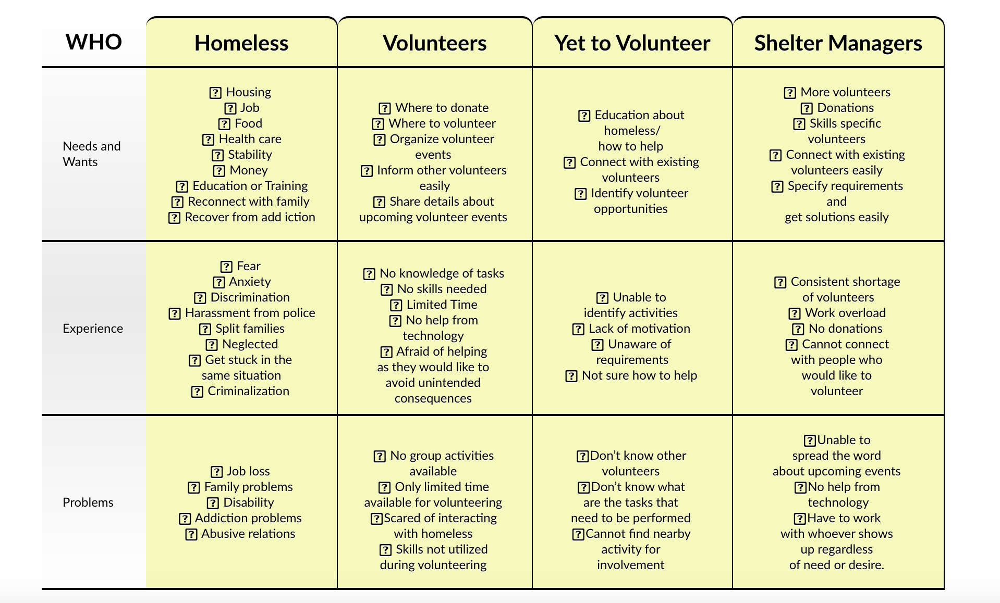
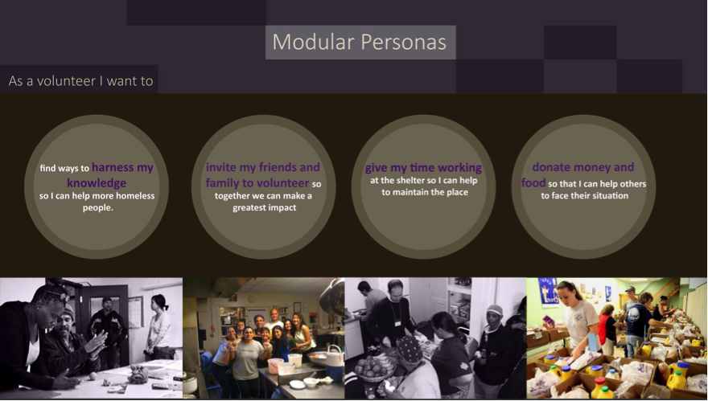
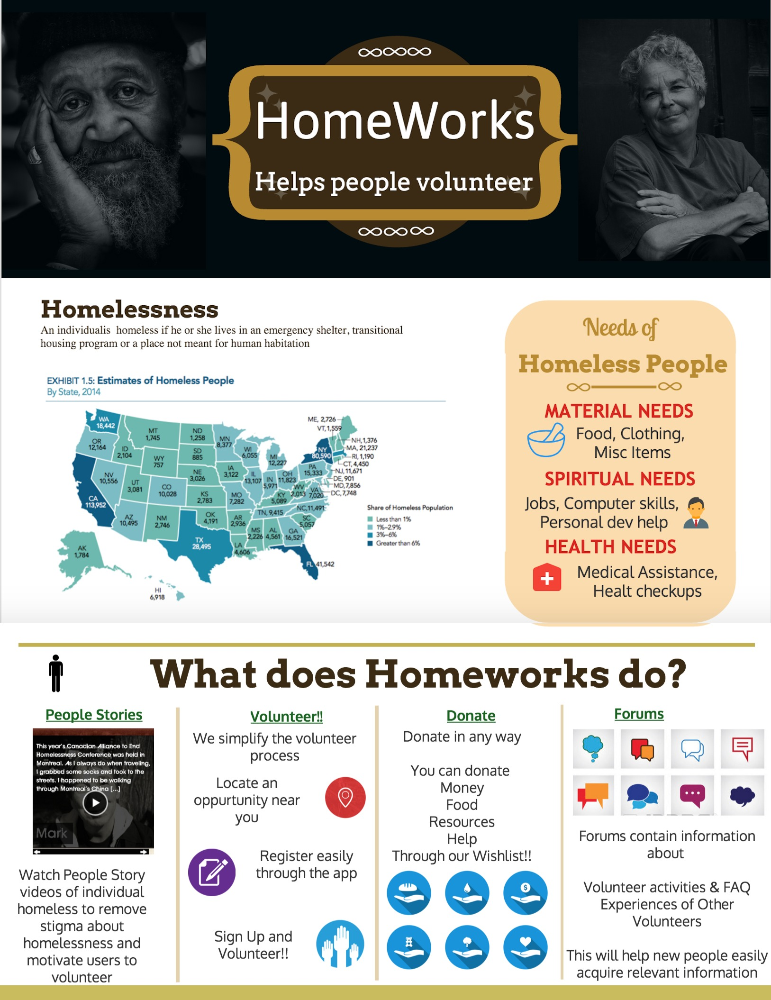

Problem
Homelessness is an endemic problem in the United States today. For the purposes of this project, homelessness or homeless refers to the definition set by HUD, which considers an individual homeless is if he or she lives in an emergency shelter, transitional housing program or a place not meant for human habitation. The key problem is to identify an effective way to motivate people to volunteer and help homeless people who need the support and encouragement of the community.
Solution
Our application HomeWorks is social networking tool that helps people volunteer and motivates them to reach out and help their community. It has four major components that help the volunteer better serve his community by providing motivation(People Stories), guidance (Forums), support(Donate) and the ability to quickly and easily signup for volunteering activites. Each component solves a critical need in the existing eco system.
Takeaways
Homelessness is a result of social issues so I believe that it is also a social responsibility to solve it. Developing social computing systems for such large scale problems demands a deep understanding not only of the activities but also the necessities of the target social groups. Through this project I identified some of the main reasons people become homeless, their experiences while living in the streets, and their needs and desires. By conducting an extensive Literature Review I observed that homelessness requires variety of solutions and involvement of large stakeholder groups to provide emergency shelters, transitional housing, and permanent supportive housing. It can only be successfully resolved through colloborative effort.
The complete report is available here
Full Process

Problem Space
In order the understand the problem space I conducted interviews with three target groups, the homeless, volunteers and non volunteers. Interviews are a great way to understand if there is a problem worth exploring. I interviwed existing Volunteers and requested them to provide some general details about:
× the number of days they volunteer
× how they become aware of volunteering opportunities,
× the process and requirements of being a volunteer,
× their motivations for volunteering, and
× the type of volunteer work they are requested to perform.
Using this data I created a consolidated target user models helped reveal roles, needs, experiences and problems of key stakeholders .I hoped to create a structured analysis that would help us identify risk factors and key relationships.
Ideation
For the development of our application I created Modular Personas, based on the Modular Persona of Bolt | Peters. We created modular personas instead of normal personas as we wanted to create snapshots of real human beings that are able to inspire peole to volunteer. Every decision was made keep the larger of goal in mind, motivating our user to reach out and help the community.
 We followed a 3 stage process for idea generation. Our most important step was the construction of the Affinity Diagram. The Affinity Diagram helped me interpret the findings of fellow designers easily and quickly and grouping our insights helped everyone truly understand the problem space. Based on the affinity diagram and personas I created user-centric scenarios for both the website and mobile application.
{kind=link}
{kind=link}
{kind=link}
{kind=link}
Prototype
I always sketch on paper before creating any kind of fidelity models. I call it zero fidelity and I prefer to start from there. I created paper sketches of the four most important components that our application must support.
What are these core components?
Donate
The Donate feature helps users donate money and other necessities easily .
is a series of videos about individual homeless people that we hoped would reduce the stigma of homelessness.
helps volunteers communicate with one another by sharing stories, asking questions, and providing resources and encouragement to other volunteers.
simplifies the process of volunteering by providing the volunteer with complete information and a 3 step sign up process.
I also built an MVP of the product in balsamiq as that helps me understand what is the main thing our application is trying to do.
{kind=link}
{kind=link}
{kind=link}
{kind=link}
Using the paper sketches and suggestions from my teammates I built low fidelity Balsamiq Models .
Usability
I coordinated and facilitated usability testing of our project by using a iterative two step process. In the first step, I first conducted a cognitive walkthroguh of the product. Then I asked a fellow designers to evaluate the product and provide feedback and suggestions. Lastly I followed the THINK ALOUD protocol and conducted a usability session with another designer.
For the second step I recruited volunteers and conducted a Wizard of Oz session to ensure that confirmation was minimal and the product was testing efficiently . Then I conducted heuristics on the visual design and intuitiveness of the product using Nielsen's heuristics. We also conducted a cognitive walkthrough with the participants and used pre and post questionnairres to determine comfort and ease of use. Some pictures of our participant demographics and user testing metrics is provided below. Please view the report for detailed issues and recommendations.
{kind=link}
{kind=link}
{kind=link}
{kind=link}
Be Humble and Iterate
Along with the high fidelity prototype I also created a presentation and Poster to promote HomeWorks. Based on the usability tests I built the high fidelity prototypes.
The complete report is available here
